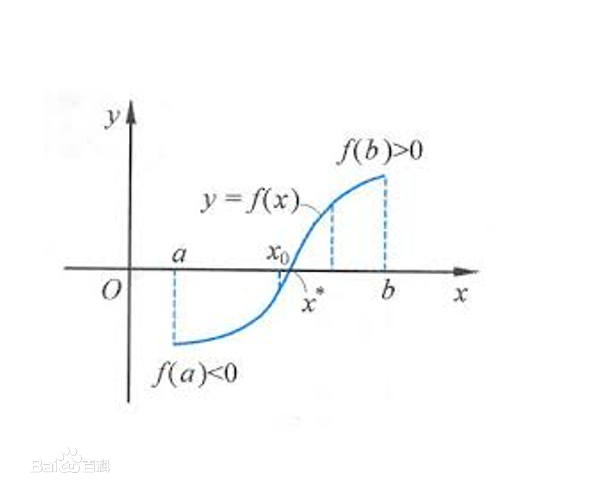
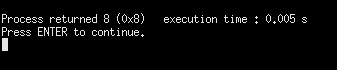

二分法是数学领域的一种求零点的算法
对于定义区间为$[a,b]$上的连续函数$f(x)$，若有$f(a)$与$f(b)$异号，根据介值定理，$f(x)=0$的解必在$[a,b]$上，酱紫，就可以通过二分运算逐步缩小$[a,b]$（也就是取其子区间）来逼近函数的零点了
图解如下：

二分法的计算步骤如下：
取中点$\frac{a+b}2$
若$f(a)与f(x)$异号，则令$b=x$,否则令$a=x$
当子区间小于给定的要求长度时，停止二分运算
以上是在数学问题上的求解，在计算机科学方面，又衍生出了二分查找算法，其思想一样，只是处理的是问题是离散形式的
使用条件：
待查找的序列区间单调有序（单调递增或单调递减都可以）
待查找序列和题目的要求建立的函数关系单调有序
方法：假设待查找序列和题目的要求之间的关系是单调递增的，先取区间的中心，判断该处函数值和题目标准值的大小关系，如果函数值偏小，那么应该在中心右侧的区间继续查找；如果函数值偏大 ，那么应该在中心左侧区间继续查找，直到找到对应的值或者区间缩小到左右端点之间不再包含其他数据结束。
实例代码：1
2
3
4
5
6
7
8
9
10
11
12
13
14
15
16
17
18
19
20
21
22
23
24
25#include <stdio.h>
int search(int arr[],int n,int key);
void main()
{
int arr[]={3,6,7,10,11,16,20,33,56,89};
search(arr,10,56);
}
int search(int arr[],int n,int key)
{
int low = 0;
int high = n-1;
int mid,count=0;
while(low<=high)
{
count++;
mid=(low+high)/2;
if(arr[mid]==key)
return mid;
else if (arr[mid]<key)
low=mid;//low=mid+1;
else
high=mid;//high=mid+1;
}
return -1;
}
查找结果

参考：https://www.cnblogs.com/detrol/p/7533577.html
https://www.cnblogs.com/wanglog/p/6650695.html